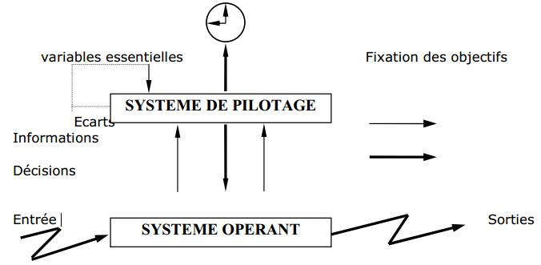

Un système est un ensemble d’éléments en interaction dynamique, organisés en fonction d’un but donnée.
Plus explicitement, un système est un ensemble d’éléments matériels ou immatériels (hommes,
machine, méthodes, règles, etc...) en interaction et transformant, grâce à un processus, des
éléments (les entrées) en d’autres éléments (le sorties).
Exemple: une chaudière transforme par combustion ducharbon en chaleur.
Tout système constitué par des organisations (entreprises, sous-ensembles d’entreprises, etc.
..) et fonctionnant en vue de la réalisation de certains objectifs est contrôlé par un autre système
appelé:
1) système de pilotage: qui dirige l’entreprise et maintient la cap sur les objectifs choisis.
Exemple: directeur, chef de service, contre maître responsable d’une unité de production.
Exemple: on obtiendra plus ou moins de chaleur selon les réglages que l’on effectue sur la chaudière, ou une durée de chauffage plus ou moins longue selon la qualité de charbon. L’opérateur qui effectue les réglages et qui contrôle le flux de charbon en entrée constitue un système de pilotage qui, par ses commandes au système physique (à la chaudière), cherche à satisfaire un objectif (tel niveau de chaleur).
Le système de pilotage précède quand à lui à la régulation et au contrôle d’un deuxième système
de l’entreprise ou de l’organisme, appelé:
2) système opérant: qui transforme un flux physique
d’entrée en un flux de sortie.
Le système de pilotage agit sur le système opérant en décidant du comportement de ce dernier en fonction des objectifs fixés.

Enfin, les informations entre le système de pilotage et le système opérant sont véhiculées par un
troisième système, appelé:
3) système d’information: qui représente des « méthodes et moyens
recueillant, contrôlant, mémorisant et distribuant les informations nécessaires à l’exercice de
l’activité de tous les points de l’organisation ».
Le système d’information réalise alors quatre fonctions essentielles:
On a alors trois fonctions dynamiques et une fonction statique. Le système d’information est donc dynamique.
En bref,
Une méthode est une démarche, reflétant une philosophie générale, proposant des outils spécifiques pour manipuler des concepts aptes à donner une représentation fidèle des systèmes étudiés et du réel perçu.
a) La philosophie générale: fournit le support continu, constituant le guide indiquant la manière d’aborder les problèmes dans leur environnement.
b) La démarche: est le mode d’emploi de la méthode. Elle propose un découpage du processus de conception en étapes cohérentes.
d) Les outils: aident à la conception, l’analyse et la réalisation.
Il y a deux catégories:
e) Le vocabulaire: pour identifier et décrire tous les concepts.
f) Un formalisme et des normes: pour spécifier la représentation des divers composantes du système.
Le besoin d’une méthode est né de la volonté d’homogénéisation de la prise en compte et de la résolution de certains problèmes en matière d’analyse de systèmes.
Plus explicitement, le concept de méthode d’analyseet de conception de système d'information (S.I). découle de:
En résumé, une méthode a un double rôle:
1) Elle guide et indique comment aborder les problèmes.
En ce sens, elle comprend une démarche de modélisation qui s’appuie sur des formalismes.
Les formalismes sont des concepts théoriques définis mathématiquement, d’où
la mise en œuvre d’une mode de raisonnement « consistant » qui permette vérification et validation de la modélisation.
La modélisation est le travail d’interprétation du problème à l’aide de formalismes.
2) Elle propose des normesou standardsde présentation des résultats du travail concepteur.
Les normes à elles seules ne forment pas une méthode, elles sont d’une absolue nécessité car elles garantissent:
- un langage standardisé (ex: si des architectes ont chacun leur propre norme de présentation
des plans, comment font les constructeur pour utiliser ces plans?
- que le travail de conception a respecté une démarche vérifiable.
source : cours-gratuit.com